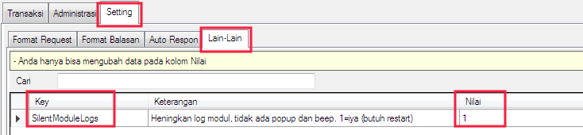

Silent Module Logs
Secara default, log di masing - masing modul OtomaX akan memunculkan popup atau beep dikala terdapat informasi penting berkaitan dengan aktifitas modul. Tentu ini akan membantu, akan tetapi jika popup atau beep terjadi di banyak modul dan di waktu yang hampir bersamaan akan cukup mengganggu, mengurangi fokus modul mana yang hendak dicek terlebih dahulu.
Mulai v4.0.0 terdapat pilihan untuk mengheningkan-nya, sehingga log modul tidak lagi mengeluarkan popup atau beep, cocok bagi yang suka keheningan. Untuk mengaktifkannya:
-
Masuk menu Setting -> Lain - lain -> Key: SilentModuleLogs -> pada kolom nilai isi: 1 -> kemudian klik tombol Simpan, perhatikan gambar berikut ini:

- Tutup buka OtomaX untuk mengaktifkan perubahan pengaturan.
- Selesai.
Kini log modul tidak lagi menampilkan popup atau beep. Bilamana ingin menampilkannya kembali, pada kolom nilai di menu di atas isi: 0 dan kemudian tutup buka OtomaX.